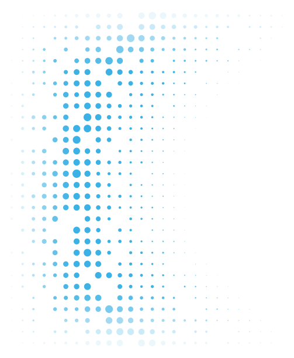
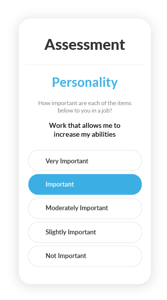
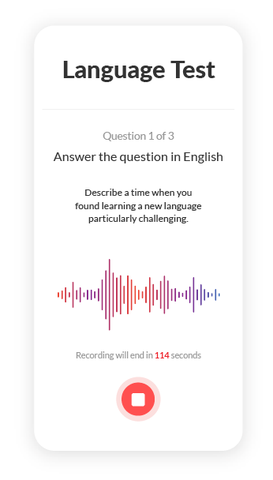

Token workbench
{{ tokenCount }} tokens · {{ specCount }} specimens
{{ source }}
Preset
{{ p.name }}
Compare to baseline
Reset
tokens.css
tokens.json
Pull latest
Push update
{{ c.label }}
{{ g.label }}
{{ g.count }}
{{ g.guideText }}
{{ g.editLabel }}
{{ g.libLabel }}

Add
{{ row.css }}
{{ row.n }}
{{ row.display }}
{{ row.iconCount }}
Resolves
{{ row.chain }}Used in
{{ row.usage }}
Contrast
{{ row.contrast }}
Maps to
{{ row.map }}Baseline
{{ row.base }}Approve
Reject
Revert {{ row.base }}
{{ row.copyLabel }}
Baseline = the committed stub values. Edits stay local to your session until you export
tokens.json and commit it.Cascade preview
{{ cascadeNote }}
Click any specimen to inspect it full size
{{ s.label }}{{ s.count }}
Web
7 specimens · layout & module tokens live here
Marketing landing page
1280×800
{{ pane.label }}
PlatformAssessmentsFor BPOsResources
Sign In
The Intelligent ATS for
High Volume Hiring
Everything you need in one place for a more intelligent, high volume hiring process. Hire faster. Hire smarter. Get results.
Get a Demo
See How It Works
68%
Time-to-Hire
Reduction
Reduction
71%
Hiring Efficiency
Improvement
Improvement
29%
New Hire Turnover
Improvement
Improvement
33%
New Hire Performance
Increase
Increase
Trusted by leading organizations


Full marketing page
1280×2100
{{ pane.label }}
PlatformAssessmentsFor BPOsResources
Sign In
The Intelligent ATS for
High Volume Hiring
Everything you need in one place for a more intelligent, high volume hiring process. Hire faster. Hire smarter. Get results.
Get a Demo
See How It Works
68%
Time-to-Hire
Reduction
Reduction
71%
Hiring Efficiency
Improvement
Improvement
29%
New Hire Turnover
Improvement
Improvement
33%
New Hire Performance
Increase
Increase
Trusted by leading organizations
One platform, six jobs
An End-to-End Recruiting Suite
Source, screen, assess, interview and hire — then learn from every outcome.
Source & Screen
Identify Top Candidates in Real Time
Post to 200+ boards, screen and rank applicants as they arrive.
Assess & Predict
Predict Who Will Stay and Perform
Validated assessments score every candidate against your own outcomes.
Automate & Accelerate
Customizable Automation at Scale
Triggers fire on scores and actions — no coordinator in the loop.
Organize & Manage
Everything You Need in One Place
Requisitions, classes, clients and geos in one system of record.
Interview & Decide
Improve Hiring Decision Speed and Accuracy
Structured guides and scorecards keep panels consistent.
Monitor & Improve
Get Full Visibility Across Hiring and Beyond
Post-hire outcomes feed back into the models every cycle.
Proof, not promises
Real results from high-volume hiring teams — measured, not modelled.

Featured · Everise
Same-day
Offers, down from a 12-day average
Client-specific recipes and automation on score across six geos — 65% lower cost per hire, 92% prediction accuracy.
Read the case study →
KeHE
79%
Turnover reduction
$456K saved in year one across distribution centres.
KM2 Solutions
67%
Turnover reduction
Multi-site agent hiring on one set of recipes.
Achieve
27%
Turnover reduction
31% lift in new-hire performance scores.
Ready to Hire Better?
See how predictive hiring works on your own roles. Fifteen minutes, no sales pitch.
Get a Demo
Talk to Our Team
Pricing page
1280×2130
{{ pane.label }}
PlatformAssessmentsFor BPOsResources
Sign In
Pricing Plans
Journeyfront offers flexible pricing plans designed to help you hire smarter and faster. The Standard plan equips you with all the essentials. For companies seeking deeper insights, the Pro plan offers advanced analytics to optimize your hiring process.
Request Quote

Standard
All the tools you need to source, screen, interview, and hire. Includes:
Career Page
Job Board Posting
Automated Hiring Workflows
Automated Scoring and Filtering
Customizable Stage Management
Structured Interviews
Interview Scheduling Tools
Automated Candidate Communication
Hiring Manager Collaboration
Candidate Scorecards
Offer Letter Management
Hiring Funnel Reporting and Analytics
Full SOC2 and GDPR Compliance
Includes dedicated implementation manager and support for onboarding and training.
Pro
Access to everything in the standard platform, plus advanced tools to optimize your hiring process:
Hiring Process Optimization Tools
–Tools that analyze your hiring process and recommend ways to achieve better results faster
–Validated, legally defensible candidate profiles that identify the skills and traits for optimal job fit
Quality of Hire Tracking and Analytics
–Track quality of hire across performance, retention, and job satisfaction
–Identify ways to improve quality of hire by optimizing the hiring process
Premium Consultation & Support
–Professional services to ensure you’re achieving your hiring-related goals
–Support to improve hiring efficiency, quality of hire, and reduce turnover
Includes dedicated customer success manager, as well as unlimited customer service for onboarding, training and support.
Add-Ons
Enhance your hiring platform with these powerful add-ons.
Assessments
Predictive Job Fit (Behavioral)
Skills Tests
Language Proficiency
Job Simulations
Candidate System Diagnostics
Integrations
ATS Integration
HRIS Integration
Background Screening
Open API for Custom Integrations
Single Sign-On
Services
Screening Plan Creation / Migration
ATS Data Migration
Custom Instruments and Evaluations
Get Customized Pricing
Journeyfront pricing is driven by the employee headcount of the organization or department using the solution. Request a quote and one of our account representatives will reach out to discover your needs and create a customized quote.
Ready to hire smarter and faster? Request a quote today.
Request Quote

The intelligent ATS for high volume hiring.
Product
Applicant Tracking System
Assessments
Integrations
Why Choose Us
Process Improvement
Turnover Improvement
Performance Improvement
Resources
Resource Hub
Calculators & Templates
Question Library
Our Blog
Compare
Company
Contact
Careers
Sign In
Get Help
Privacy PolicyTerms of UseCalifornia Notice At CollectionCookie Policy
Journeyfront, Inc. © 2026
SOC 2 TYPE 2
GDPR
Article / resource page
1280×660
{{ pane.label }}
PlatformAssessmentsFor BPOsResources
Sign In
Resources · Screening
Four screening methods, ranked by what they actually predict
JF
Research team · 8 min read · Updated August 2026
Most high-volume teams still screen on the resume, then wonder why 90-day attrition never moves. Validity is the only number that matters here: how well a method predicts on-the-job performance.
A resume screen predicts performance about as well as a coin flip with a good haircut.
Predictive assessments land at 0.62 — more than three times the resume screen — and they cost candidates less time than a phone screen.
Key takeaway
Score the role, not the resume. Build the success profile from your own post-hire outcomes.
Platform page — lazy river
1280×3200 · alternating modules
{{ pane.label }}
PlatformAssessmentsFor BPOsResources
Sign In
Platform
The Intelligent Hiring Platform
Source, screen, assess, interview, offer and hire in one system — then close the loop by feeding post-hire outcomes back into the models.
Request Demo

An End-to-End Recruiting Suite
Every stage of high-volume hiring, in one place.
Source & Attract
Screen & Rank
Track & Manage
Assessments & Tests
Interviewing
Scorecards & Decision Making
Offers & Onboarding
Reporting & Analytics
Integrations
What Makes Journeyfront Different
Data Layer
The Foundation
Every applicant, assessment, interview and post-hire outcome in one record — not scattered across spreadsheets and vendor portals.
Without this layer: your models learn from whatever survived the export.
Intelligence Layer
The Brain
Validated predictive models score each candidate against your own outcomes, and revalidate as new cohorts land.
Without this layer: you are ranking résumés and calling it a signal.
Automation Layer
The Execution Engine
Triggers fire on scores and candidate actions — advance, reject, schedule, offer — for a whole hiring class at once.
Without this layer: recruiters spend the day moving people between stages by hand.
Screen & Rank
Rank, reject or advance in real time
Every applicant is scored as they arrive, so your team works a ranked list instead of a queue. Bulk actions move hundreds of candidates at once.
How many applicants do you actually need? Run the funnel math →
Request Demo

SCREEN & RANK
Knockout questions
Screen out the unqualified before a recruiter opens the application.
Learn More →
SCREEN & RANK
Predicted-fit ranking
One score per candidate, built from your own post-hire outcomes.
Watch Demo ▶
SCREEN & RANK
Bulk actions
Advance, reject or message hundreds of candidates in one pass.
Learn More →
Assessments & Tests
Assessments that predict retention
Behavioral assessments, job simulations, skills tests and AI-powered language tests — all validated against how people actually perform in your roles.
See which screening methods actually predict performance →
Learn More

ASSESSMENTS & TESTS
Behavioral assessments
Traits mapped to the outcomes you care about, per role.
Learn More →
ASSESSMENTS & TESTS
AI language tests
CEFR-scored speaking tests across 56 languages.
Watch Demo ▶
ASSESSMENTS & TESTS
Job simulations
Realistic previews that show the work before day one.
Learn More →
See it in action
Want to explore the platform yourself?
Watch Demo Videos
Free hiring guides
BPO hiring →Screening methods →The real cost of a bad hire →Funnel math →Assessment validity →
Ready to get started?
Begin transforming your hiring process.
Request Demo
Solutions page — BPO
1280×2400 · grid modules
{{ pane.label }}
PlatformAssessmentsFor BPOsResources
Sign In
The ATS That's
Purpose Built For BPO Hiring
50+ BPOs, 100,000+ agent hires a year, client-specific hiring recipes instead of spreadsheets.
71%
Hiring efficiency
68%
Faster time-to-hire
29%
Less new-hire turnover
Get a Demo
Trusted by
EveriseKeHEKM2EtechClearSource
What BPO hiring actually breaks on
Four problems every BPO recruiting team runs into, and what a generic ATS does with them.
Challenge 01
Volume hiring on a deadline
Hundreds of agents by a client go-live date, with a funnel that has to hold up all month.
Other ATSs weren’t built for a class of 200 starting Monday.
Challenge 02
Balancing speed and quality
Move fast and the wrong hires land in week one. Slow down and you miss the contract.
Speed metrics alone hide the turnover you pay for later.
Challenge 03
Multi-client, multi-geo complexity
Different clients, different scorecards, different countries, one recruiting team.
Generic pipelines can’t hold client-specific hiring recipes.
Challenge 04
Class-based hiring at scale
Cohorts start together, so offers, onboarding and training have to move together.
Per-candidate workflows fall apart at cohort scale.
Journeyfront vs a traditional ATS
Capability
Journeyfront
Traditional ATS
Assessments built in
Automation triggered by candidate scores
Client-specific hiring recipes
Class / cohort hiring
Post-hire outcomes feed the models
Fraud detection
Multi-geo, multi-client reporting
Time to first hire
Same-day possible
Days to weeks
Featured case study · Everise
12 days to same-day hiring
ChallengeAgent classes starting weekly across six geos, with a 12-day average time-to-hire.
SolutionClient-specific recipes, assessments at the top of the funnel, automation on score.
ResultsSame-day hiring, 65% lower cost per hire, 92% prediction accuracy.
92%
Prediction accuracy
65%
Lower cost per hire
Why BPOs choose Journeyfront
For TA Leaders
Fill a class on the date you promised
One funnel view across clients
Fewer coordinators per hire
For Executives
29% less new-hire turnover
$32M+ average annual savings
Audit-ready reporting by client
For Operations
Agents who stay past 90 days
Performance lift of 33%
Language coverage in 56 languages
Questions BPO teams ask
01
How fast can we go live?
02
Do you replace our existing ATS?
03
How are assessments validated?
04
Can recipes differ per client?
05
What about fraud and proxy testing?
06
How do you measure quality of hire?
No sales pitch. No long forms.
Just 15 minutes on your own roles and your own numbers.
Get a Demo
Web modules — detail
every module at readable scale
{{ pane.label }}
Module · nav
PlatformAssessmentsFor BPOsResources
Sign In
Module · section header + 3-up cards
Eyebrow
Section heading, tokenised
Measure, alignment and rhythm all come from layout tokens.
Source & Screen
Card module: padding, radius, border and elevation are tokens.
Assess & Predict
Set module-surface to the tint and every card follows.
Monitor & Improve
Grid gap is one token away from a denser page.
Module · media + text (lazy-river unit)
Automate & Accelerate
Flip lazy-flip to row and the river becomes a column
Media ratio, module radius and elevation are all tokens too.
Advance if score ≥ 3.5
Module · stat band
71%
hiring efficiency
68%
faster time-to-hire
29%
less turnover
33%
performance lift
Module · capability marquee
Sourcing·Screening·Assessments·Automation·Scorecards·Analytics
Module · testimonial + form
“Higher caliber candidates — a direct testament to the retention we're seeing.”
VP Talent Acquisition · 12,000-seat BPO
Get a Demo
Work email
Hires per year
Request a time
Module · footer
The intelligent ATS for high volume hiring. 50+ countries since 2017.
Product
Platform
Assessments
Integrations
Pricing
Why Choose Us
Predictive hiring
Customer stories
ROI calculator
Security
Resources
Guides
Webinars
Blog
Help centre
Company
About
Careers
Contact
Partners
PrivacyTermsCalifornia NoticeCookie Preferences
Journeyfront, Inc. © 2026
SOC 2
GDPR
Product
3 specimens · chrome from the live app
Product screen — recruiter dashboard
1280×800
{{ pane.label }}
DASHBOARDEMPLOYEESPROFILESJOB REQSCANDIDATESCLASSESINTERVIEWS
Start
Dave Biesinger
{{ pane.brand }}
{{ pane.brand }}
Dashboard
Search candidates
AR
Open roles
34
+6 this week
In assessment
1,248
across 9 clients
Time to hire
4.2d
−68% vs. Q1
Highest predicted fit
View all 1,248
Candidate
Role
Stage
Fit
{{ c.ini }}
{{ c.name }}{{ c.role }}
{{ c.stage }}
{{ c.fit }}
Product screen — candidate list
1440×880
{{ pane.label }}
DASHBOARDEMPLOYEESPROFILESJOB REQSCANDIDATESCLASSESINTERVIEWSREFERRALS
Start
Dave Biesinger
Everise
Everise
< All Job Reqs
(US) Balance Staffing: Non-Licensed
(US) Healthcare: Non-Licensed | 08/03/2026 | Remote, US | Full Time | Active
HIRING CLASSESDASHBOARDCANDIDATESSETUPACTIVITY
Actions
Search
Select Saved View
All Candidates559
Application Status
Incomplete170
New45
Active269
Hired4
Rejected71
Step
Application Form21
Pre-Screen201
Assessment9
Recruiter Interview310
Pending Offer9
More Filters >
Edit Columns
Name
Email
Time in Step
Step
Activity Status
Status
Score
Concepcion Aceves
1401mamakind@gmail.com
1d 3h
Pre-Screen
Video Interview — Co…
Rejected
KO
Kacie Martin
kaciebzh1789@gmail.com
1d 23h
Pre-Screen
Complex Healthcare Si…
Incomplete
4.46
Roben Pough
robenleeann18@gmail.com
2d 3h
Pre-Screen
Computer Skills Test 2…
Incomplete
4.69
Kiana Carmichael
giron.renee@yahoo.com
3d 19h
Assessment
Speedtest Assessment…
Incomplete
3.61
Ashley Langbehn
ashleylangbehn7@gmail.com
3d 19h
Recruiter Interview
US-Centene WAH (Recr…
Active
3.57
Jessica Allen
jessicaallen8551@gmail.com
3d 18h
Recruiter Interview
US-Centene WAH (Recr…
Active
3.40
Thomas Runkles
thomas.runkles@yahoo.com
3d 20h
Recruiter Interview
US-Centene WAH (Recr…
Active
3.73
Results 1 - 25 of 559
Prev1234…23Next25 Per Page
Product screen — screening plan setup
1440×880
{{ pane.label }}
DASHBOARDEMPLOYEESPROFILESJOB REQSCANDIDATESCLASSESINTERVIEWS
Start
Dave Biesinger
{{ pane.brand }}
{{ pane.brand }}
< All Job Reqs
Marketing Coordinator 2026
Marketing Coordinator 2026 | 05/11/2026 | Lehi, UT, US | Full Time | Active
HIRING CLASSESDASHBOARDCANDIDATESSETUPACTIVITY
Actions
Details
Application Form
Attributes 9
Screening Plan
Team
Predictive Models
Job Postings
Configurations
AI Resume Scoring
Screening Plan
Preview
+ Add Automation
+ Add Step
1. Pre-Screen Questions+ Add Activity
Activity
Completed By
Questions Count
Est. Time (min)
Logistics Questions
Candidate
5
5
Time Limit
Screening Questions
Candidate
5
6
Time Limit
Prescreen to AssessmentsAutomation · score ≥ 3.5
2. Video Interview + Typing Test+ Add Activity
Activity
Completed By
Questions Count
Est. Time (min)
Assessments Intro
Candidate
0
3
Video Question
Candidate
1
3
Typing Test
Candidate
1
1
3. Phone Screen + Assessments+ Add Activity
Presentations
5 specimens · 1280×720
Slide — PowerPoint title
1280×720
{{ pane.label }}
Q3 hiring review
Hire faster. Hire smarter. Get results.
What the closed loop learned from 12 hiring classes.
Talent Operations01
Slide — PowerPoint title (real deck)
1280×720 · matches the production title slide
{{ pane.label }}
An Intelligent Hiring Platform
Built for BPOs
Interview Guide
4.8
4.4
4.0
3.6
3.2
2.8
Language Test
Candidate Overview
1157
Applications
75%
Completion
0.62
Validity
Candidate Scorecard
4.8
4.4
4.0
3.6
3.2
2.8
2.4
Ranked Applicant List
4.8
4.4
4.0
3.6
3.2
2.8
Slide — three-column content (real deck)
1280×720 · header band, blue column bars, result stack
{{ pane.label }}
BPO Experience & Expertise
Experience
EVERISE
KM² Solutions
CCI Global
Etech
ClearSource
ERC Global
afni
instant teams
Gatestone
TDS Global
InteLogix
PATLive
activus connect
KIVO
Expertise
Ramping hiring under tight timelines
Balancing speed/quality
Customizing hiring workflows by geo
Building client profiles (and read-outs)
Using evergreen reqs to fill hiring classes
Results
94%
Everise
Time to Hire Reduction (18 days > 1 day)
89%
KM² Solutions
Reduction in Application Review Time
67%
PATLive
90-Day Turnover Reduction
Slide — data
1280×720
{{ pane.label }}
Validity by screening method
Q3 review
0.18
0.26
0.41
0.62
Resume screen
Phone screen
Language test
Predictive assessment
3.4×
more predictive than a resume screen
29%
lower 90-day turnover
12d → 0d
Everise time to offer
Meta-analytic validity coefficients, 2026 internal study · n = 41,20804
Slide — product demo
1280×720
{{ pane.label }}
One screening plan, every client recipe
app.journeyfront.com/job-reqs/setup
JOB REQSCANDIDATESCLASSESINTERVIEWS
Screening Plan+ Add Step
1. Pre-Screen Questions2 activities · 11 min
Prescreen to Assessmentsscore ≥ 3.5
2. Video Interview + Typing Test3 activities · 7 min
3. Phone Screen + Assessments3 activities · 40 min
1
Drag to reorder
Recipes per client, not per recruiter.
2
Automations between steps
Scores advance candidates while you sleep.
3
Est. candidate time
58 minutes, end to end.
Collateral
3 specimens
PDF — guide page
Letter 8.5×11
{{ pane.label }}
BPO hiring guide
Screening methods, compared
Resumes tell you what candidates have done. Predictive assessments tell you what they will do in your role. The table below compares the four screening methods most BPO teams run today, scored on validity and candidate drop-off.
Method
Validity
Drop-off
Resume screen
0.18
Low
Phone screen
0.26
Medium
Language test
0.41
Medium
Predictive assessment
0.62
Low
What to do first
Score the role, not the resume. Build a success profile from your own post-hire outcomes before you add another interview round.
{{ pane.brand }} — confidential7
Email
600px
{{ pane.label }}
Partner update · August 2026
Intelligent Hiring Platform
Everything we shipped in 2026: new sourcing channels, deeper screening automation, offers that go out for a whole hiring class at once.
Hi Kathy,
Three things this month: a webinar your clients are welcome to attend alongside you, a rundown of everything we shipped in 2026, and a partner win that closed eight weeks after an introduction.
1 · Live webinar, September 16
How automation can improve hiring speed and quality for BPOs
Most BPO hiring teams are told to pick a side: move faster or hire better. You shouldn't have to. It's a working session, not a pitch.
Wednesday, September 16, 2026
12:00 PM MT · 2:00 PM ET | 60 minutes, on Zoom
What the 60 minutes covers
10 min
Daniel Ash frames where automation, AI, and human judgment each belong
25 min
Cody Jolley walks a real BPO req through the funnel, live in the product
20 min
Emmalyn Foerster takes questions and the failure modes teams actually hit
Save your seat
Open to partners, customers, and prospects. Everyone who registers gets the recording and the slides.
2 · Product releases, 2026
What's new in Journeyfront
Source & Screen
Meta Lead Ads sourcing turns campaign spend into screened candidates automatically. WhatsApp messaging, a branded referral portal, and bulk actions across hundreds of candidates.
Interview & Decide
Activity-level availability, expiring scheduling links, a rebuilt offer letter workflow, and bulk send offers — a whole hiring class gets its offers in minutes.
68%
Faster time-to-hire
−29%
Avg. 90-day turnover, year one
Download the 2026 release guide (PDF)
Hire faster. Hire smarter. Get results.
journeyfront.com · LinkedIn
You received this because you are a Journeyfront partner. Unsubscribe · Manage preferences
Journeyfront, Inc. © 2026
Business card
3.5×2 in
{{ pane.label }}
Hire faster · Hire smarter · Get results
Alexis Rivera
VP, Talent Operations
alexis@journeyfront.com
+1 415 555 0148
journeyfront.com
The intelligent ATS for high volume hiring
Social
2 specimens
Social post
1080×1080
{{ pane.label }}
The best time to predict a bad hire is before it happens.
29%
less new-hire
turnover
turnover
LinkedIn post
feed card + square image
{{ pane.label }}
{{ pane.brand }}
3,531 followers
Visit website
3d
Live webinar, September 16: How Automation Can Improve Hiring Speed and Quality for BPOs. …more
Live webinar
How Automation Can Improve Hiring Speed and Quality for BPOs
Wed, Sept 16, 2026 | 12:00 PM MT | Virtual
Presented by Daniel Ash, CEO and Co-Founder of Journeyfront
Click the link in the caption to register
Register Now!
You and 3 others1 repost
Like
Comment
Repost
Feed chrome is neutral on purpose — only the image card and avatar carry tokens. Card recipe from the real posts: logo top-left, outlined eyebrow pill, large all-dark-blue headline, bright-blue detail line, italic presenter line, halftone dot field hard against the right edge, pale-blue CTA with italic helper text, cut-out bleeding off bottom-right.
Assets
4 specimens · photography, design elements & compositions — add or remove assets in the panel
Photography — treatments
1200×620
{{ pane.label }}
Hero composite
Background is a hint, never the subject
Predicted fit
92
Full colour in a 20px frame — how photography appears in guides and collateral.
Cut-outs stay full colour
Photography — library sheet
900×620
{{ pane.label }}
People library
{{ photoLibNote }}
{{ p.label }}
Design elements — the dot field
1200×460
{{ pane.label }}

On white
On tint
On dark
On brand
{{ graphicNote }}
Composition — background · person · product
1200×620
{{ pane.label }}
The intelligent ATS for
High volume hiring
Hire faster. Hire smarter. Get results.
Get a demo
Predicted fit
92
/ 100 · top decile
Retention +29% · validated across 14 classes
Motion & density
1200×620 · the only surface where motion and the two smallest spacing steps are visible
{{ pane.label }}
Motion
Every bar runs on --t-ease. Only the duration differs.
Hover & press feedback
--t-motion-fast
Default transition
--t-motion-base
Panel & sheet entrance
--t-motion-slow
A slower curve reads as heavier. If a bar snaps or overshoots, the ease is wrong — not the duration.
Density
The two smallest steps, in the roles they are specified for.
Icon-to-label & tight stacks — --t-space-xs
Structured interview complete
Scorecard submitted
Predicted fit
92
Button groups & chip rows — --t-space-sm
Advance
Message
Reject
Bilingual
Night shift
Tenured
Referral
Drop either step to 0 and the groups collapse into one mass — that is the read these two tokens control.
Photography
the stock-photo library — every asset from the 2025 Brand Guide; add or remove in the Photography token group
People — cut-outs & portraits
{{ peopleCount }} assets · foreground people stay full-colour
{{ it.name }}
{{ it.file }}
Backgrounds — settings & environments
{{ backgroundCount }} assets · contact-centre and workplace settings; always rendered duotone behind content, never the subject
{{ it.name }}
{{ it.file }}
Product images
real product screens from the 2025 Brand Guide and the live site — used across heroes, slides and compositions
Product screens
{{ screenCount }} assets · individual product UI only — add or remove in the Product images token group
{{ it.name }}
{{ it.file }}
Compositions
approved combinations — background + design element + person + product
Approved compositions
{{ compositionCount }} assets · add or remove in the Compositions token group
{{ it.name }}
{{ it.file }}
Treatment recipes — 2026 brand guide
1280×620 · tint + dot element + person + product, recreated live from tokens
{{ pane.label }}


Assessments That Get Used
Journeyfront’s language tests are the best in the world
Mobile Friendly
Most user friendly in the world get it now
Mobile Friendly
Most user friendly in the world get it now
Person just hired, great job
Assessments That Get Used
Journeyfront’s language tests are the best in the world
Mobile Friendly
Most user friendly in the world get it now
Mobile Friendly
Most user friendly in the world get it now
Swag
4 specimens · flat mockups
Signage — booth panel
1200×700
{{ pane.label }}
Hire faster. Hire smarter. Get results.
Booth 214 — see a live scoring run on your own hiring data.
Get a Demo
T-shirt
flat mockup
{{ pane.label }}
Stop guessing
Mug
flat mockup
{{ pane.label }}
Predict, don't guess
Tote bag
flat mockup
{{ pane.label }}